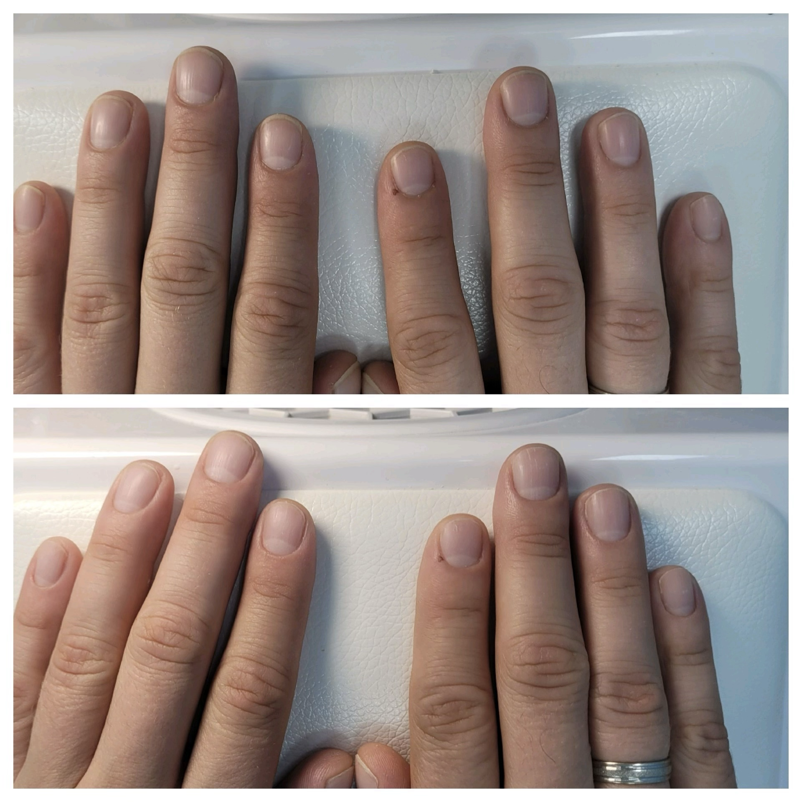
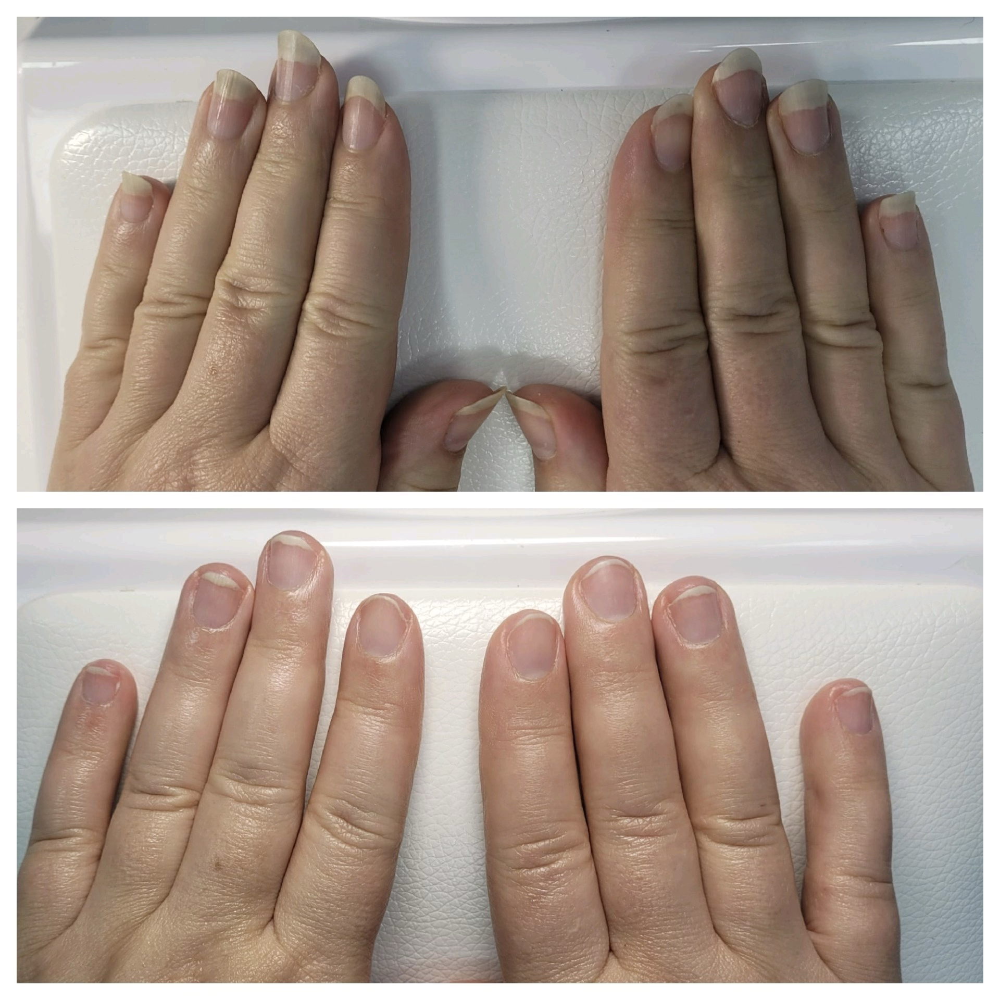

Парамедицинский маникюр
Парамедицинский маникюр — это профессиональная процедура, которая направлена не только на эстетику, но и на лечение и профилактику проблем с ногтями и кожей рук.
В отличие от обычного салонного ухода, здесь акцент делается на здоровье: специалист устраняет причины дискомфорта, а не просто маскирует дефекты. Процедуру проводит специалист-подолог, который умеет диагностировать патологии и подбирать безопасные методы обработки.
Когда показана процедура
Парамедицинский маникюр рекомендован при следующих проблемах:
- Грибковые поражения — удаление поражённых участков для повышения эффективности лечения.
- Вросший ноготь — аккуратная коррекция, удаление избыточных тканей.
- Онихолизис — отслоение ногтевой пластины от ложа, очищение подногтевого пространства.
- Травмы ногтевой пластины — правильное удаление повреждённых фрагментов, профилактика инфицирования.
- Псориаз ногтей, экзема, дерматит кистей — аккуратная обработка, удаление гиперкератотических наслоений.
- Ломкость, расслоение, деформация ногтей — восстановление структуры с помощью укрепляющих составов.
- Трещины, заусенцы, сухость кожи рук — увлажнение, питание и заживление.
- Сахарный диабет — особая осторожность, стерильность и минимизация травматизма.
- Восстановление после длительного ношения гель-лака или наращивания — укрепление повреждённой пластины.
Этапы проведения процедуры
- Осмотр и консультация. Специалист осматривает руки и выявляет проблемы, при необходимости назначает обследования.
- Подготовка. Проводится антисептическая обработка кожи и инструментов.
- Аппаратная обработка. Специалист фрезером с профессиональными насадками корректирует форму пластины, убирает утолщения и удаляет ороговевшие участки кожи.
- Нанесение средств. В зависимости от состояния ногтей используются лечебные составы, масла, сыворотки или укрепляющие покрытия.
- Рекомендации. Специалист объясняет, как поддерживать результат дома.
Японский маникюр P-Shine
Японский маникюр P-Shine — это процедура комплексного ухода за ногтями, направленная на их оздоровление и придание естественного, здорового блеска.
В отличие от обычного маникюра, здесь не маскируют дефекты лаком или гель-лаком, а восстанавливают структуру ногтевой пластины с помощью натуральных компонентов.
Главная цель — восстановить, укрепить и выровнять ногти, вернуть им здоровый розовый оттенок. Процедура даёт накопительный эффект: с каждым сеансом состояние ногтей улучшается.
Кому подойдёт
- Ломкость, расслоение и хрупкость ногтей.
- Медленный рост ногтевой пластины.
- Тусклый цвет и отсутствие естественного блеска.
- Восстановление после длительного ношения гель-лака.
- Гипогидроз, то есть сухость кожи рук.
Не проводите процедуру при грибковом поражении ногтей, воспалении околоногтевого валика или открытых ранах. В таких случаях сначала нужно убрать проблему.
Этапы проведения процедуры P-Shine
- Осмотр. Оценивается состояние ногтей и кутикулы, подбираются компоненты.
- Подготовка. Руки обрабатываются антисептиком, корректируются длина и форма ногтей.
- Аппаратная обработка ногтей. Специалист проводит аппаратный парамедицинский маникюр.
- Насыщение ногтевой пластины пастой. Минеральная паста втирается в пластину специальным бафом.
- Глянцевание пудрой. Минеральная пудра на основе пчелиного воска создаёт защитный барьер и придаёт ногтям блеск.
- Завершающий уход. Специалист наносит увлажняющий или питательный крем.
Часто задаваемые вопросы
Для каких ногтей подходит P-Shine?
Он особенно полезен для тонких, ломких, слоящихся ногтей, а также для ногтей с медленным ростом, тусклым цветом или признаками дефицита витаминов.
Сколько держится эффект?
Интенсивный блеск обычно сохраняется несколько дней, постепенно становясь мягче. При регулярном курсе результат накапливается.
Как часто можно делать процедуру?
Обычно рекомендуют интервал примерно раз в 2–4 недели, чтобы ногти успевали усвоить полезные вещества. Если ногти тонкие или чувствительные, интервал лучше увеличить.
Примеры работ


Запишитесь на приём
Оставьте заявку — мы свяжемся с вами и подберём удобное время.